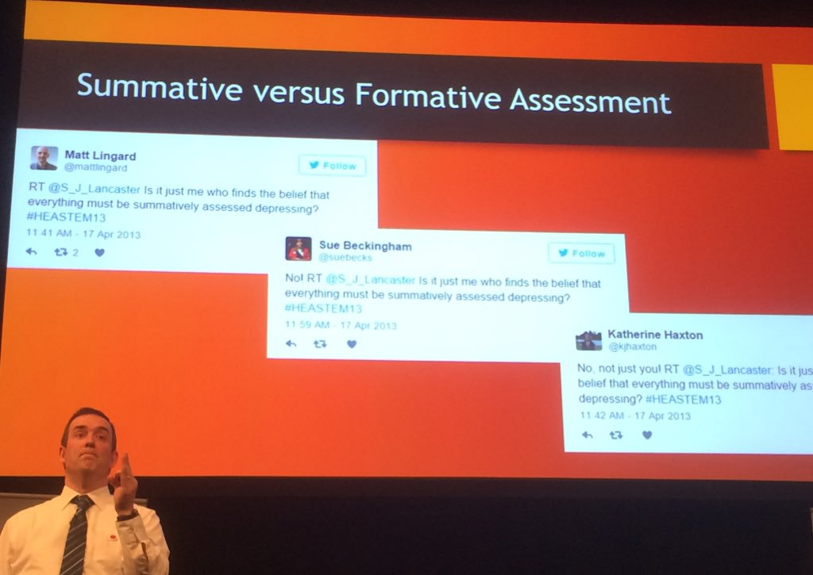
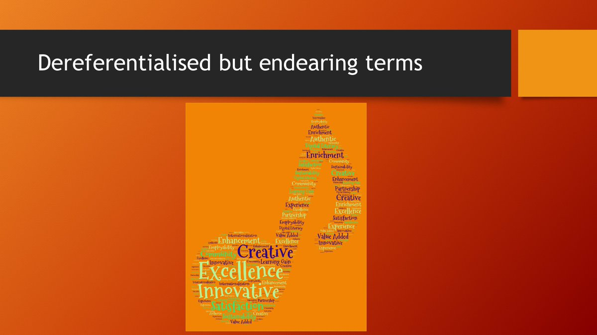
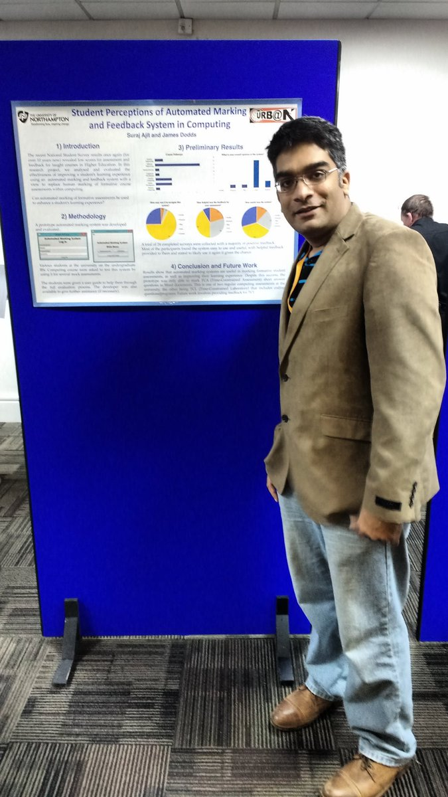
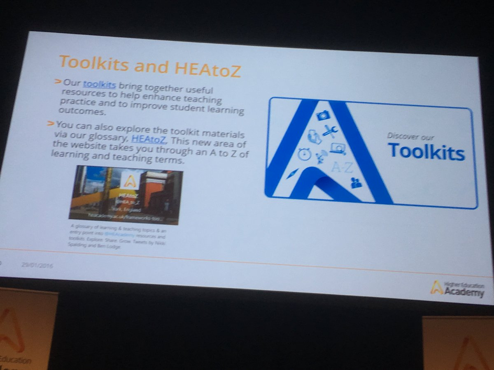
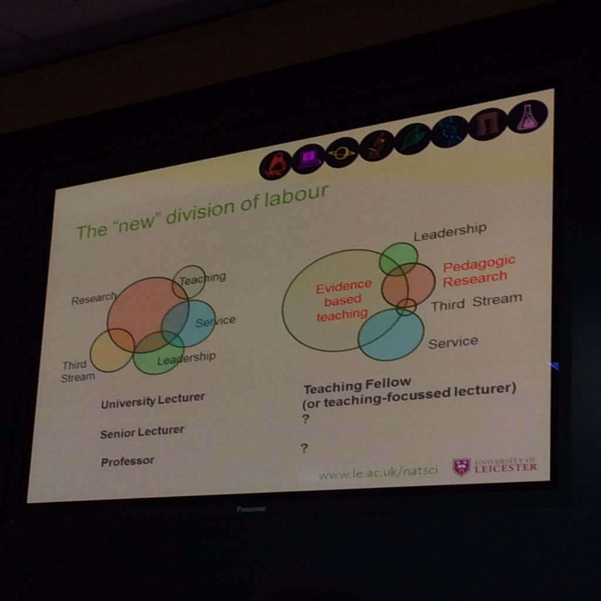
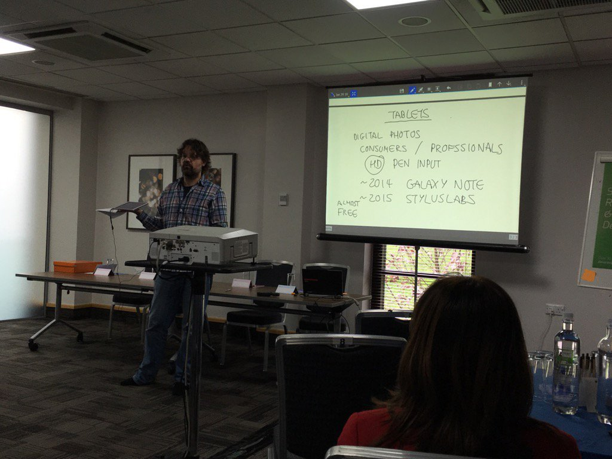
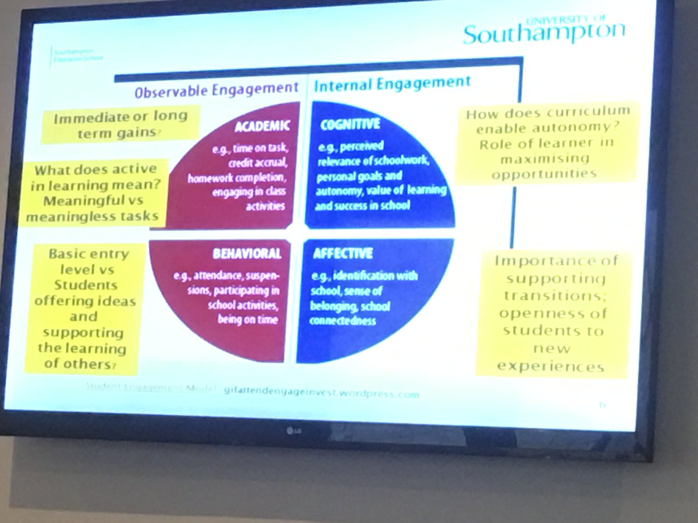
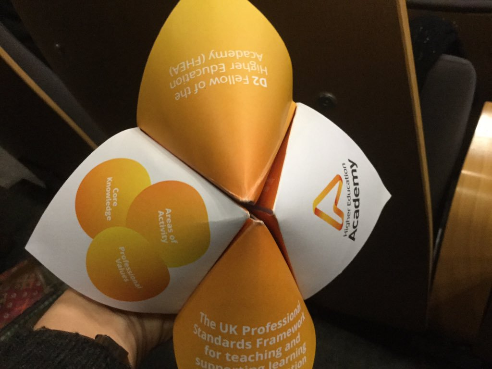

Edit
HEA STEM Conference 2016 - Day 2
An intial draft of the day 2 storify. Headings and commentary needed.
- Teaching excellence in abundance @HEASTEM #HEASTEM16! Great first day of presentations and discussions, great atmosphere. Roll on Day 2!
- This extended quote from Peter Drucker has just missed the cut for my #HEASTEM16 keynote #toomanywords pic.twitter.com/SLK2Q2yp6N
- #HEASTEM16 folks please follow and welcome @Bobgilmour3 to Twitter and help him develop his new personal learning network
- Interface of worlds: putting finishing touches on #HEASTEM16 pres while listening to @Runrig1973 The Story (Its arrived! Its wonderful!)
- Why you should be using twitter at conferences, @BobGilmore3 in case we did not convince you last night..#HEASTEM16 https://twitter.com/suebecks/status/692970219057340416
- @Chris_Wiley oops just noticed got sent incomplete. There is a big range of variety between subdisciplines in CS #HEASTEM16
- Check out our work on programming pedagogies w. @JamesHDavenport @alanhayes725 https://www.heacademy.ac.uk/innovative-pedagogical-practices-craft-computing #HEASTEM16 https://twitter.com/HEASTEM/status/688013342242410497
- .@rikkiprince only got access to the abstract... Will see if I can catch up with the author today & put you in touch for details. #HEASTEM16
- @SoftwareSaved oops just remembered I could have brought a stack of #bettersoftwarebetterresearch stickers to give away at #HEASTEM16
- A few thoughts on day 1 - looking forward to day 2! http://drstephaniebennett.blogspot.co.uk/2016/01/HEASTEM16DAY1.html?spref=tw&m=1 #HEASTEM16 @HEA_chat
- Comedy in the classroom is on the train to #heastem16 pic.twitter.com/aiOuKj2jM4
- This was the end of day 1 #HEASTEM16 looking forward to day 2 @HEAcademy @HEASTEM pic.twitter.com/hphxrXxYbg
- Gosh @HEAcademy with @KaronMcB @RossKGalloway and @judyhardy as authors you are spoiling us at #HEASTEM16 pic.twitter.com/kk9fUv2JrQ
- Twitter to date at #HEASTEM16 1495 Tweets 661 Re-Tweets 312 Users 89 HashTags
- A wonderful visualisation of the inaugural shared tweetchat led by @HEA_chat #LTHEchat #HEAchat #HEASTEM16 https://twitter.com/LTHEchat/status/692661650407694336
- Check out @SocioVizNet at http://ln.is/socioviz.net/HzDXn for the source of the stats and graphics #HEASTEM16
- Dentist appointment cancelled so will be following tweets from #HEASTEM16 instead!
- @Annakwood in a different Timezone/continent....so will also follow tweets #HEASTEM16
- more on lecture capture: if youre worried you could be replaced by a mere recording, then your sessions arent very interactive. #HEASTEM16
- so doing something to make face-to-face more worthwhile would probably be a good thing (and they cant replace that with a video) #HEASTEM16
- Uhm, the Christmas music is a wee bit much folks :) #HEASTEM16
- At the #HEASTEM16 conference today - programme looks really good pic.twitter.com/VyEZJ1GcHg
- Looking forward to Dr Sally Bradley's (@BradS4) keynote this afternoon at #HEASTEM16 'Fellowship and beyond: what next?'
- #HEASTEM16 great storify of yesterdays lecture capture tweetings Thanks @RSC_EiC :) https://twitter.com/RSC_EiC/status/693004817778761731
- Dr Katherine Haxton @kjhaxton will be presenting at #HEASTEM16 this PM on using infographics in teaching (3rd years - thats what you did)
- Lecture capture discussions #HEASTEM16 - our critical research with students here: http://bit.ly/replay-research-nov15 as presented at #altc
- With some study workflows using lecture capture that students shared available here: http://bit.ly/1lKscFQ #HEASTEM16
- Highlight of #HEASTEM16 about to commence: Keynote by Prof @S_J_Lancaster 'Key Notes in Instrumental Change'
- After a thought provoking day 1 am really looking forward to day 2.#HEASTEM16 @HEASTEM
- Ah, thats nice aiming in universities for excellence everywhere but not the same. #HEASTEM16
- @S_J_Lancaster kicking off his #HEASTEM16 keynote asking everyone to move so they are ready to work together pic.twitter.com/XFr1SEc2GM
- #HEASTEM16 @S_J_Lancaster encouraging delegates to sit close enough to others to interact! #goodpractice pic.twitter.com/iKYDU8HqdP
- "Excellence everywhere but not the same" A very good reflection of teaching & learning across the countries #HEASTEM16
- Ready for #HEASTEM16 and very much looking forward to presenting Think Architecture @NorthumbriaUni @ThinkPhysicsNE pic.twitter.com/WAbjYmBMXB
- Looking forward to another exciting set of talks and posters #heastem16
- @S_J_Lancaster fantastic thankyou ! #HEASTEM16
- great definition of a chemistry academic: employed to make chemicals who then ends up teaching #HEASTEM16
- Sean Ryan: what we are trying to achieve in HEIs is excellence but not that we all become the same. #HEASTEM16
- @S_J_Lancaster has chemical green fingers for teaching, #HEASTEM16
- I want my students to become chemists, not to just have a chemistry degree - @S_J_Lancaster #HEASTEM16
- @S_J_Lancaster - 'I want my students to be chemists , not just have a degree in chemistry' #HEASTEM16
- @S_J_Lancaster discussing how continual reflection on his teaching has led to instrumenting change #HEASTEM16 pic.twitter.com/SQlSlLxJDA
- .@S_J_Lancaster considering the type of questions he asks of students (in assessments) - inspired by @RossKGalloway #HEASTEM16
- Giving your devices some love - 'let's build a discussion' #HEASTEM16 pic.twitter.com/44wVmieaX6
- Prof @S_J_Lancaster inviting discussion via Twitter during and after his keynote #HEASTEM16
- Interesting talk #heastem16 pic.twitter.com/7KvaFGhsM7
- #HEASTEM16 the keynote is bigger than the room pic.twitter.com/SjXQDERhEL
- .@S_J_Lancaster In love with UEA since Valentine's 2000 and narrating his journey innovating in HE #HEASTEM16 pic.twitter.com/1FRt0yeYeW
- Simon Lancaster Questions - opportunities for learning - now we must DO something in the lecture theatre! #HEASTEM16 pic.twitter.com/fYBJgt79dt
- #HEASTEM16 the keynote is bigger than the room http://goo.gl/LfQ2w8 https://twitter.com/rf_fangirl/status/693010128442920961
- Concepts not content should dominate teachings and keynotes @S_J_Lancaster #HEASTEM16 pic.twitter.com/TVoRe4vav7
- Another keynote innovation: a concepts slide in lieu of a contents slide! #HEASTEM16 pic.twitter.com/xm7e6PibYq
- really like the idea of a concepts slide instead of a content slide will be stealing that idea :) #HEASTEM16
- @S_J_Lancaster Agreed, we need to join together to create a critical mass of evidence #HEASTEM16
- #HEASTEM16 @S_J_Lancaster talks about gaining critical mass for everyone at STEM to create something different pic.twitter.com/imEE6HyNyz
- #HEASTEM16 Prof Simon Lancaster (UEA) starting lecture with 'Concept' slide, not content. Let's ban "Learning Outcome" slides from lectures
- "There is a critical mass at #HEASTEM16 who can make a greater impact if work together as a network" @S_J_Lancaster #HEASTEM16
 @S_J_Lancaster Not a content slide but a 'concept' slide at the start of keynote #HEASTEM16. Better than LOs! pic.twitter.com/hlTxVgBQr0
@S_J_Lancaster Not a content slide but a 'concept' slide at the start of keynote #HEASTEM16. Better than LOs! pic.twitter.com/hlTxVgBQr0- Twitter expanding the walls of the conference lecture theatre #HEASTEM16 https://twitter.com/malc851/status/693010128572907524
- #HEASTEM16 when i ask a question I ask everyone, not just the teachers pet. Raise a hand pic.twitter.com/dytVWXa8U6
- @sm_rutherford curiously my students have specifically asked for LO slides but perhaps thats indicative of wider issues. #HEASTEM16
- @S_J_Lancaster encouraging delegates to collaborate for research (in person or electronically) to impact international community #HEASTEM16
- #HEASTEM16 concepts not content.
- A concept slide is different to a content slide, good idea but not equivalent. #HEASTEM16
- He did say he would be controversial- but disagreeing with Yoda! @S_J_Lancaster #HEASTEM16
- 'When I ask a question, I want every one of you to answer' says @S_J_Lancaster #keynoteetiquette #HEASTEM16
- #HEASTEM16 Coming in from the cold....creative collaboration in the STEM world is very welcome! @S_J_Lancaster @UniofBradford @LifeSci_UoB
- #HEASTEM16 'We don't need no clickers' @S_J_Lancaster
- Simon Lancaster kicks off day 2 of the #HEASTEM16 conference in Nottingham. #VeryEngaging pic.twitter.com/sssEQG7rAY
- Can't make people learn - but can create an environment to learn, students need to recognise we can't do everything #HEASTEM16
- As a teacher I cannot make you learn. I can only create an environment in which you might learn something @S_J_Lancaster #HEASTEM16
- Every teaching session is an experiment #HEASTEM16
- #HEASTEM16 If I am not providing an opportunity for students to learn I am wasting my time Opportunity is the operative word. @S_J_Lancaster
- What a relief: We can't make students 'do'. All we can do is create an environment to enable them to try. @S_J_Lancaster #HEASTEM16
- @kirstyhyndes Too used to doing things in silos! #HEASTEM16 https://twitter.com/kirstyhyndes/status/693010988669485056
- As an educator, there is no "do" nor "do not", only "try"! (teaching doesn't happen without learning) #HEASTEM16 https://twitter.com/GrahamScott14/status/693011287861809152
- has excellent lost its meaning? Were off to dereferenetialisation land again. Sigh. #HEASTEM16
- Prof @S_J_Lancaster the pedagogical innovation ambassador sharing his #LTHEchat Golden Tweeter Award #HEASTEM16 pic.twitter.com/Eo1kbcxcup
- Love the use of dereferentialisation #HEASTEM16 I'm going to use this more often @S_J_Lancaster
- @S_J_Lancaster 'teaching is my laboratory, experimenting with how to best create environments for learning ' #HEASTEM16
- Finally here little late into @S_J_Lancaster keynote #HEASTEM16 just intone for questioning our meanings of pedagogy words!
- Provocative! search for excellence is a meaningless pursuit. "Excellence" is a dereferentialised term @S_J_Lancaster #HEASTEM16
- Should we always strive to be innovative in teaching or is there an argument for using tried and tested approaches? #HEASTEM16
- #HEASTEM16 what is 'innovative' what is 'excellent'? derefertialisation in HE @S_J_Lancaster
- 'Is dereferentialised a scourge?' Keynote by Prof Simon Lancaster #HEASTEM16 pic.twitter.com/CuVFRCFLjd
- So there are a whole bunch of words that we need to define what we mean by them (or provide evidence?) #HEASTEM16
- How do you qualify what an 'excellent teacher' is in HE it's a slightly fuzzy feeling? Notion?concept? #HEASTEM16
- Like with job applications we need hard evidence support these descriptive words @S_J_Lancaster #HEASTEM16 as we teach our students
- the secret of change is to focus all of your energy, not on fighting the old, but on building the new. #HEASTEM16
- #HEASTEM16 depends on what problem we are trying to answer....often increasing reliability is overlooked https://twitter.com/heastem/status/693012525202460673
- #HEASTEM16 Provide evidence of how you are excellent - the most common feedback I provide students for reflective essays @S_J_Lancaster
- "No good starting from the deficit model" #HEASTEM16 pic.twitter.com/QmUn5DXq6Y
- Thrilled to be presenting today on #MakerEd & seeing some exciting talks! @FTSWarrington #HEASTEM16 pic.twitter.com/h47bmpXOAz
 #HEASTEM16 at last, an actual "key note"!! @S_J_Lancaster @LifeSci_UoB @STEMBradford @UniofBradford pic.twitter.com/NsdQvye9g0
#HEASTEM16 at last, an actual "key note"!! @S_J_Lancaster @LifeSci_UoB @STEMBradford @UniofBradford pic.twitter.com/NsdQvye9g0- #HEASTEM16 Provide evidence of how you are excellent - the most common feedback I prov http://goo.gl/jo0yjX https://twitter.com/fuyunyans/status/693013149604257792
- Re: #activelearning - 'focus on building the new, rather than fighting the old' quotes @S_J_Lancaster #HEASTEM16 pic.twitter.com/xUjy6rr5dQ
- Not just academic community needs to challenge lecture to PBL & SCALE-UP our facilities/estates #HEASTEM16 @S_J_Lancaster
- The timing of #HEASTEM16 is pretty good - were all heading back to teaching so can apply things. Over summer, too much empty space
- If you want to instrument change don't do it from a position of deficit! (elaborate? @S_J_Lancaster) #HEASTEM16
- #HEASTEM16 be careful of your quotes - it might not be who you think it is pic.twitter.com/yC3N497t6r
- Not just for learning but creating environments for inclusion & well-being. #HEASTEM16 https://twitter.com/ICJS_Research/status/693012369224658945
- 1/3 audience has merged modules to create large modules, small handful done opposite decoupling modules #HEASTEM16
- My fav education quote? "Learning is to punish the ignorant, for the offences they would've committed if they hadnt known better" #HEASTEM16
- 1/3 of delegates merged modules to create fewer but others have done the opposite - so whats right? @S_J_Lancaster @HEAcademy #HEASTEM16
- Moving onto the Hawthorne effect now#HEASTEM16 its all about lightbulbs it seems.
- Attack on meaningless quotations for which their provenance hasn't been properly double-checked (e.g. 'Socrates") @S_J_Lancaster #HEASTEM16
- I'd never accept anything on Twitter without researching first. May be start a peer review process? #HEASTEM16
- any change in the lighting environmental conditions produced temporary increase in productivity, #Hawthorne #HEASTEM16
- We're just instrumenting change to have a (temporary) increase in productivity @S_J_Lancaster #Hawthorne #HEASTEM16 https://twitter.com/anortcliffe/status/693013986116255745
- Hawthorne effect would suggest that all innovation will have a positive impact on learning #HEASTEM16
- Either means that any change is good, or the workers are pleased to be observed (someone cares about productivity) #HEASTEM16
- #HEASTEM16 @S_J_Lancaster We just did 3rd option. Completely reinvented all modules (into larger chunks) to focus on concepts not content
- .@S_J_Lancaster HE has habit circular change, working on Hawthorne effect any change is good #HEASTEM16
- #HEASTEM16 what change goes around in HEA comes back round again cycles.. Any change is good. #hawthorneeffect
- 'What goes around comes around' Hawthorne effect @S_J_Lancaster #HEASTEM16 pic.twitter.com/NWiJ3GcUF5
- @S_J_Lancaster change is good whenever it happens, but experienced staff have seen it all before #HEASTEM16
- need to evaluate teaching changes over longer periods to move past the initial, enthusiasm of the first cohort #HEASTEM16
- #HEASTEM16 repeated practice, old wine in new bottles! But not happening in vacuum as context and learner expectations shift?
- No, it's about the observation rather than just the change! @S_J_Lancaster #HEASTEM16 https://twitter.com/kjhaxton/status/693014177913376768
- 'Any good scientific experiment changes one variable at a time' @S_J_Lancaster #HEASTEM16
- Using Twitter to evaluate Twitter facts? Now that's irony. #HEASTEM16
- Thou' we used institutional change to go back LTA lit on curriculum design to inform change @AdrianaGWilde @S_J_Lancaster #HEASTEM16
- Hawthorne effect: any change good, but do we leave in place long enough to evaluate improvement over long term? @S_J_Lancaster #HEASTEM16
- .@AdrianaGWilde @S_J_Lancaster @kjhaxton #HEASTEM16 light bulbs illuminating the new idea! Oh the irony!
- #HEASTEM16 Come to my talk at 1pm on "Rethinking Pedagogies for Programming: Computational Thinking, Codemanship and (Software) Carpentry"
 #HEASTEM16 Quotes on the Internet: http://www.bigart.co.uk/wp-content/uploads/2013/04/abraham-lincoln.jpg
#HEASTEM16 Quotes on the Internet: http://www.bigart.co.uk/wp-content/uploads/2013/04/abraham-lincoln.jpg- @QuoteResearch #HEASTEM16 @HEASTEM @S_J_Lancaster 'you can check your quotes on Twitter using quote investigator!' Looks a great resource
- #HEASTEM16 who said....having a QI moment!
- @cpjobling knowing it had to be wrong #HEASTEM16
- #HEASTEM16 not Darwin? we thought it was Bruce Lee @S_J_Lancaster
- Ah @S_J_Lancaster you can always go for qualitative data :) #HEASTEM16 Stats arent everything!
- @cpjobling i'm saying Darwin #HEASTEM16 but forgot the hashtag
- The thorny issue of measuring learning gain #HEASTEM16
- #HEASTEM16 @S_J_Lancaster a break down of the etiology of the quote can be found here for those interested http://quoteinvestigator.com/2014/12/19/fittest/
- @S_J_Lancaster Is a 'Professor of Twitter' and would like to collaborate with you on Pedogical research #HEASTEM16 @HEASTEM
- We (SHu) are starting chem' eng' next year, collaborative chem' education research' opp' @S_J_Lancaster #HEASTEM16
- I wonder what the job description of a Professor in Innovation is, @S_J_Lancaster ? #HEASTEM16
- Call out for collaborative chemistry education research by @S_J_Lancaster #HEASTEM16
- So in HE there's no 'innovation', just 'renovation'? #HEASTEM16
- Need collaborative research projects to build an evidence base of what works in learning and teaching #HEASTEM16
- 'We have to stop reinventing wheels and start generating real evidence' @S_J_Lancaster #HEASTEM16
- @S_J_Lancaster I thought it was Alistair Campbell! Wrong as usual #HEASTEM16
- Knew it wasnt Darwin, but wasnt willing to put a tenner on it #HEASTEM16 https://twitter.com/Scooby1969/status/693016334372835328
- 'Pedagogy is now backfilling for where the technology has previously raced ahead with' @S_J_Lancaster #HEASTEM16 #keynote
- Yay! @S_J_Lancaster has stepped out of the EdTech arms race and is thinking about questions and talking #HEASTEM16
- Not sure, I work on what problem am trying to solve, innovate to solve problem, enhance @kjhaxton @lowlevelpanic @S_J_Lancaster #HEASTEM16
- Provocative again! @S_J_Lancaster urging us to flip the classroom. Peer instruction takes time! Ask yourself what really matters #HEASTEM16
- Simon Lancaster "Liberate yourself from the tyranny of content #HEASTEM16
- #HEASTEM16 "If what you do could be recorded and put online, consider whether it SHOULD be recorded and put online" [a bit misquoted]
- Now talking about cutting content drastically to focus in on key concepts that chemists should know post-graduation. #HEASTEM16
- Peer instruction. We have found this is powerful way to learn. Students teach each other. Wonderful to see them grow #HEASTEM16 @UoN_SHS
- "What can go once should go online" Prof David Read quoted by @S_J_Lancaster #HEASTEM16 as an intro to flipping the classroom
- "Online liberates from tyranny of content" @S_J_Lancaster Flipped class uses time & space for real learning through interaction #HEASTEM16
- Subject benchmarks are not a shopping list of content, our programmes need to focus on what skills are required #HEASTEM16
- #HEASTEM16 @S_J_Lancaster echoing one of my main concerns with HE, how can we expect 'Deep' learning when we teach so much crystal knowledge
- selecting students to attend university based on A-levels is selecting based on ability to cram. #HEASTEM16 #theglovesareoff
- 'Why was I delivering all that stuff (& expecting all students to remember after graduating)? 'Cause it had always been that way' #HEASTEM16
- Interesting @S_J_Lancaster is questioning the long tail effect of the content learning this is where PBL show to make an impact #HEASTEM16..
- education gives to us that which remains after we have forgotten all that we have learned the schools E.D. Battle, 1899 #HEASTEM16
- So agree with @S_J_Lancaster that Ed must be about more than cramming #HEASTEM16
- .@S_J_Lancaster urges us to get the courage to cut. As if we all had that freedom! GCHQ accredited courses are too prescriptive #HEASTEM16
- Be brave on "Do I really that" #HEASTEM16 pic.twitter.com/UwGwzax62N
- @S_J_Lancaster 'couldn't we cut (content) to concentrate on what matters' #HEASTEM16
- @S_J_Lancaster totally agree that we can cut out a lot of content. Cancer of the curriculum is not what we want #HEASTEM16
- @S_J_Lancaster on acknowledging our metric drivers #HEASTEM16
- .. My students do remember their PBL module, last night conversing with grad' 11yrs who studied PBL 13yrs ago! #HEASTEM16 @S_J_Lancaster
- dont generally expect tweets made in 2013 to resurface #HEASTEM16
- 'Learning is the residue of having thought about something' quotes @S_J_Lancaster in #HEASTEM16 #keynote
- "Education gives to us that which remains after we have forgotten all that we have learned in schools" #HEASTEM16 pic.twitter.com/VEH6xZ5tQ5
- In reality if you record lecture without students I found it is much shorter and truncated, however @kjhaxton @S_J_Lancaster #HEASTEM16...
- @anortcliffe @S_J_Lancaster yep, targeted recordings can be very effective, easier to edit (versus editing out lecture stuff). #HEASTEM16
- #HEASTEM16 @S_J_Lancaster Highlighting the importance of getting students to think inquistively, come and see poster our for quant evidence!
- I think we need to carve out timetable space to talk to students about need to think & discuss - they are so trained in cramming #HEASTEM16
- Formative assessment is not embraced by marks driven students #HEASTEM16 pic.twitter.com/V5Ns9kbH5t
- #HEASTEM16 questions we ask students in the classroom should not test knowledge but provide the opportunity to learn @S_J_Lancaster
- #HEASTEM16 how many assessments of you actually need for a degree - Gibbs said 10 (but he made it up) @S_J_Lancaster
- can you just shift summative assessments to formative assessments to reduce the salami slicing? #HEASTEM16 formative must prep for summative
- #HEASTEM16 @S_J_Lancaster learning is the residue of having thought about something. Food for thought from the keynote speaker
- #HEASTEM16 @S_J_Lancaster 'I don't want students to have a degree in x (chemistry), I want students to be x (chemists)
- The formative assessment is meant to "form", prepare the student for something else. But humans strategise and summative trumps #HEASTEM16
- ...Record'g live lec notes 10mins segments our res' shows enable students to reconnect with their thought patterns #HEASTEM16 @S_J_Lancaster
- must consider human nature when thinking about summative vs formative assessment - prioritise the thing youre being judged on #HEASTEM16
- Dont average likert data. #HEASTEM16
- Am collecting data to enc strategists to engage with their formative assessment (will it inc my mark?) #HEASTEM16
- @S_J_Lancaster noting that formative assessment often doesn't seem to work as it scheduled alongside other summative assessment #HEASTEM16
- #HEASTEM16 Something to ask academic school/dept: How many assessments do you need in order to award a degree? @pcutl @biosi_staff
- Prof @S_J_Lancaster sharing a Twitter discussion during 2013 conference he archived in Storify #HEASTEM16 pic.twitter.com/9KHW2tUDjl
- Stand up against the abuse of Likert data #HEASTEM16
- @S_J_Lancaster Why assess? Surely assessment should help the student with their future job/life #HEASTEM16 they would gain useful skills
- Glad to hear that @S_J_Lancaster is Opposed to misuse of likert data - me too as it's used against me in promotion criteria #HEASTEM16
- They're labels!! (that happen to be numbers), but they are labels!! @S_J_Lancaster #HEASTEM16 https://twitter.com/kjhaxton/status/693020890255069184
- Cutting content--ask yourself, does it really need to be in the lecture if not examining students on it? #HEASTEM16 pic.twitter.com/jo4wzGYCAn
- #HEASTEM16 YES! I've always detested the way NSS is numerical interpretation of Likert data ... and then interpreted in a Boolean manner!
- Let's stop abusing likert scales by averaging the data #HEASTEM16 lets get rid of them?
- I don't apply statiticians approach mathematically represent Likert, I show number selected each Likert in a table @kjhaxton #HEASTEM16
- @dompates is that another way of saying....I teach the way I was taught? #HEASTEM16
- .@anortcliffe really good way, better to know how many picked each - much more informative. #HEASTEM16
- I'd say 54% delivery time in a lecture is not a bad balance, may be a bit low but ok #HEASTEM16
- Is listening always passive? @S_J_Lancaster I'm thinking about what you're saying, promise! #HEASTEM16
- 'Creating a conceptual question (rather than MCQ) is challenging' says @S_J_Lancaster #HEASTEM16 #OER
- Delete Bad slides as open educational content and replace with conceptual questions to stimulate discussion not passive learning #HEASTEM16
- 'Time to share good questions online rather than content' @S_J_Lancaster #HEASTEM16
- #HEASTEM16 good questions and good problems sought after as an academic's toolkit #OpenEd
- #HEASTEM16 doesn't NSS also abuse Likert opinion data?
- @wentale Pretty much. Always difficult to be amongst first through the door (teaching or not) #HEASTEM16
- .S_J_Lancaster Have you thought asked your students to design 5 applied MQ with their created flipped vignettes? #HEASTEM16
- Key recommendation from @S_J_Lancaster to finish - need to share questions for students to actively answer around our community #HEASTEM16
- @ani2tall Good point - shouldn't be! Just needs to be well balanced #HEASTEM16 https://twitter.com/ani2tall/status/693021870279405568
- Thanks to all of the lovely #HEASTEM16 twitterers. Following the tweets from my desk @BCUCELT towers :)
- @S_J_Lancaster some of my introverted students are always thinking & learning just silently #HEASTEM16
- @SimonHeath1 @S_J_Lancaster the most important part is the heart! Teach from there. #HEASTEM16 HEASTEM16
- Yes silent is always passive! #HEASTEM16 https://twitter.com/ani2tall/status/693022966725120000
- Looking forward to todays's #HEASTEM16 with @Ka81 but we SO should have scheduled in a visit to @HSNOTTS - wow! pic.twitter.com/oinsIei004
- Beyond educational resources. @S_J_Lancaster sharing question banks as #OER http://www.slideshare.net/mobile/SimonJLancaster #HEASTEM16 pic.twitter.com/5AvH7LnLHO
- Love the reference to only learning 5% from lectures being a bit like homeopathy - a load of rubbish #HEASTEM16 @S_J_Lancaster
- Yes. Active doesn't equate to physical. #HEASTEM16 #ActiveMinds
- We do need to ensure that our drive towards active doesnt put off quiet students, can cause anxiety and stress for some #HEASTEM16
- @Scooby1969 which presenter was this? Couldn't agree more. #HEASTEM16
- Agree, threshold concepts take a while for us to recognise - need to ask students, they can surprise us. #HEASTEM16
- #HEASTEM16 @S_J_Lancaster but there is nothing simple about listening! Some skills development needed about active listening
- Carol Evans asks @S_J_Lancaster what's active learning - lectures can be very efficient in imparting knowledge if fit for purpose #HEASTEM16
- #HEASTEM16 Role of the lecture being questioned - my thoughts on the issue from last year https://theacademicteacher.wordpress.com/2015/07/14/what-role-does-the-lecture-have-in-the-modern-age/
- Good points from Carol Evans - people do gain from lectures if it's fit for purpose and don't do 'activity' for the sake of it. #HEASTEM16
- @DominicCHenri where does 'Deep' learning occur then? #HEASTEM16
- #HEASTEM16 an entire section of psychology dismissed in one slide. What's your alternative to likert?
- .@S_J_Lancaster Learning needs to be designed well to challenge students to apply knowl'e so actively listen/act if designed well #HEASTEM16
- What's the evidence base? #HEASTEM16 https://twitter.com/Scooby1969/status/693023542045249536
- @S_J_Lancaster it would be interesting to run a conference with no lectures! What would this look like? I would love to try #HEASTEM16
- Agree with @S_J_Lancaster, I've had 'oh, just tell me the answer!' #HEASTEM16
- @AdrianaGWilde @S_J_Lancaster but more efficient still if moved into online space. Flipped class allows other scheduled activity #HEASTEM16
- @Boubertl I think the criticism is in doing quantitative analysis on what's essentially labels? @S_J_Lancaster #HEASTEM16
- #HEASTEM16 flipping the flip, challenge the learners to create the conceptual questions! https://twitter.com/ani2tall/status/693024542189604864
- I find the 'here to get a prestigious degree/job' can get in way of engagement #HEASTEM16
- dont backfill if a student doesnt do prep for a flipped/interactive session. No 10 minute summaries, theyll learn soon enough. #HEASTEM16
- @S_J_Lancaster Do you use a conversation with a student as an exploration for their understanding to assess? #HEASTEM16 #summative #viva
- @kjhaxton that is such a shame - we still need to make sure teaching is still accessible and inclusive for all #HEASTEM16
- @Boubertl #HEASTEM16 the challenge is about the correct handling of data types
- students lazy learners? Occasionally? Often? Surely a purpose to lectures/seminars is to awaken their inneradult to want to learn #HEASTEM16
- Good points from @KEHplantsci on the role of the lecture, coming back up at #HEASTEM16 https://twitter.com/kehplantsci/status/693024023664398336
- @DominicCHenri development of opinion might need time but need the crystals in the science? #HEASTEM16
- Golden rule of flipping, never ever back fill for students who have not viewed the material #HEASTEM16
- @HEAEducation Fit for purpose is key, there are many approaches that can be that. Don't use any strategy just for the sake of it. #HEASTEM16
- I've got the right biscuits for #HEASTEM16 pic.twitter.com/0EzjgO6lUs
- @suebecks @S_J_Lancaster keynote sounded great from this distance. Sorry we aren't @VConnecting. (Eyes drooping) Enjoy the rest! #HEASTEM16
- Thanks to @S_J_Lancaster for a thought provoking keynote, embedded full of excellent learning and teaching ideas #HEASTEM16
- Once again, interesting and thought provoking stuff from @S_J_Lancaster at #HEASTEM16 "a flipped session is like a fancy dress party"
- Loving the work from Nokia #HEASTEM16 pic.twitter.com/zJ8EfZ7nVF
- Enjoying catching up with someone I haven't seen since I graduated at #HEASTEM16
- HEA Framework from Doug Cole #HEASTEM16 pic.twitter.com/K1uoE9988N
- 'Full circle: value of hindsight - final yr sts reflect on prior peer guidance' poster by @suebecks at #HEASTEM16 pic.twitter.com/ojhKd8p79E
- @wentale @S_J_Lancaster @VConnecting thanks Wendy! Simon was great. Shame the keynote wasn't live streamed #HEASTEM16
- Doug Cole looking at the 'Drivers for Change' that affect us all. It's HOW an institution tackles them that can make us unique #HEASTEM16
- Multiple drivers for change in Higher Ed #HEASTEM16 pic.twitter.com/L6KgHsnSxG
- So given so many of us (including Doug Cole) have issues with the #DLHE what are we doing / can we do to get this changed? #HEASTEM16
- Drivers for change #HEASTEM16 employability, skills and wider engagement pic.twitter.com/k2rUZOUmdn
- .@surajajit on automating feedback! #HEASTEM16
- Doug recognising employability as a dereferentialised term. #HEASTEM16
- perhaps Im cynical but would employability = 'getting an obvious job without much effort' for some students? #HEASTEM16
- @wentale @S_J_Lancaster @VConnecting with an extra pair of hands I could have periscoped! #HEASTEM16
- @kjhaxton How many people go into the exact job they want directly after graduation? #HEASTEM16 #employability
- Drivers for change! #HEASTEM16 pic.twitter.com/gcKWukHWYF
- #HEASTEM16 HEA's Doug Cole- frameworks to demystify and engage #HEASTEM16
- @dompates how many finalists know the exact job they want and how to move towards getting it? #HEASTEM16 #Employability
- @insidecircles ill post slides soon! #HEASTEM16
- Talking #Employability #HEASTEM16 @theDougCole @HEAcademy #frameworks what's the biggest challenge? pic.twitter.com/ofti0nmFng
- Doug advocating for HEA frameworks. #HEASTEM16
- Doug Cole sharing examples of personal use of the frameworks within institutions he's worked in #HEASTEM16 https://twitter.com/s_j_lancaster/status/693031470072532992
- Oh goodness, it shouldnt even need to be said! its not about the metrics, it is about doing the right thing. #HEASTEM16
- Doug Cole acknowledges the framework is a starting point towards consistency (and doing the right thing) #HEASTEM16 pic.twitter.com/oyaH4sxzZi
- where is the framework for empowering students to become adults who drive social change and create a better world for all? #HEASTEM16
- The HEA Framework series #HEASTEM16 pic.twitter.com/4JW5Fc3J3I
- need a framework for embedding education for sustainable development? #HEASTEM16 https://twitter.com/S_J_Lancaster/status/693034197091536896
- #HEASTEM16 Same at any presentation; better to mail a Word doc / podcast to discuss on the day than to just read out text slabs off slides
- @LucieMiddlemiss never go anywhere without the comedy glasses! #HEASTEM16
- @kjhaxton How will that work in the marketplace? ;) #HEASTEM16
- #HEASTEM16 Same at any presentation; better to mail a Word doc / podcast to discuss on http://goo.gl/O0U9Tx https://twitter.com/WendyyySimeon/status/693034545403179008
- @kjhaxton #HEASTEM16 the power of combining the frameworks
- 
- One for next time? TF career structure? Esp. During/post TEF? #HEASTEM16
- The HEA Framework series #HEASTEM16 https://twitter.com/kjhaxton/status/693034453950713857
- @JamesEDEU I dont dispute attitude importance. But I am looking to evidence a pedagogy independent of conflation. #HEASTEM16
- Good point re. the things we're all doing already. We just haven't slapped an "employability" label on it. #HEASTEM16
- Good point - what about self-employment that we are inc. encouraging in our students? #employability #HEASTEM16
- Employability remains a contested term. Graduates have diff pathways. It's about student success - Doug Cole #HEASTEM16
- @SamLP absolutely right - less unproductive content, more space for understanding content through playing with it #HEASTEM16
- Staff AND students can fail to recognise this. #HEASTEM16
- Those on the inside track know the language and history. Those on the circumference (the everyday academic) can only respond. #HEASTEM16
- Doug Cole from @HEAcademy What the HE sector is currently doing... Taking an ad-hoc approach #HEASTEM16 pic.twitter.com/InOVtNysY6
- Skills depend on context #HEASTEM16
- #HEASTEM16 embedding employability is a thorny issue, it's not all about skills, it's about a complete picture, well rounded graduates
- #HEASTEM16 Presenting a poster on Automated Marking and Feedback in Computing pic.twitter.com/sVvADqSNNr
- Explore the HEA toolkits designed to support embedding, reflection & actioning the frameworks http://tinyurl.com/jomw8sg #HEASTEM16 @HEA_to_Z
- Im confused - is employability now the term we give to general life skills? If so, give me strength. #HEASTEM16
- A good article on gamification / GBL - a little background reading for @DocWithTheSocs talk at 2:15! #HEASTEM16 https://twitter.com/e_sheninger/status/692927767843856384
- #HEASTEM16 employability in curriculums is about helping students to become confident, critical reflective learners transitioning into work
- What to focus frameworks on #HEASTEM16 pic.twitter.com/DpnqgdGXjN
- Embedding employability in HE framework #HEASTEM16 pic.twitter.com/B1ELkm2Vh6
- Skills, attitude, professionalism, adaptability - all part of 'employability' from @HEAcademy #HEASTEM16
- @S_J_Lancaster Thought provoking presentation this morning! #HEASTEM16
 #HEASTEM16 Doug Cole, let's not narrow the scope of Employability Skills @HEASTEM @LifeSci_UoB @STEMBradford pic.twitter.com/48zGYj4h0c
#HEASTEM16 Doug Cole, let's not narrow the scope of Employability Skills @HEASTEM @LifeSci_UoB @STEMBradford pic.twitter.com/48zGYj4h0c- @kjhaxton All learning and teaching is employability?! Sad that love of subject getting lost #HEASTEM16
- can we have a different word maybe? human-ability rather than employability? If its about everything #HEASTEM16
- Its ok Doug we dont have framework fatigue #HEASTEM16
- Students at the heart of it all - as they should be! The most used 100 words so far in tweets #HEASTEM16 @HEASTEM pic.twitter.com/4X8ue2jZT3
- @KEHplantsci @kjhaxton Surely with no love of subject, there's no commitment to sector when employed? #HEASTEM16
- @surajajit thank you! #HEASTEM16
- Debate around the value of DLHE #HEASTEM16 may be interested in this @NoelAnn https://twitter.com/mike_rat/status/685133825555431426
- @paulgratrick Manchester's contribution to HEA SEP referenced at the #HEASTEM16 Nottingham #proudpurple pic.twitter.com/cvogcAjyzy
- 
- @theDougCole talking about @HEA_to_Z toolkits and highlighting the great resources available #HEASTEM16
- Listening to Doug Cole at #HEASTEM16 talk about employability frameworks....just swapped my hat for a mo and now thinking about EdD!
- @cuthbert_kate @KEHplantsci no, not binary, I think it shifts focus from conceptual understanding of subject to skills focus ed #HEASTEM16
- #HEASTEM16 Look forward to looking through these! pic.twitter.com/Bg0U2shG0Q
- Framework fogging? There are a lot but we do appreciate the help they give #HEASTEM16
- Definitely need to tap into the @HEAcademy HEAtoZ toolkits for resources to engage students in HE #HEASTEM16
- Expert teachers #HEASTEM16 pic.twitter.com/hh9xdXmuME
- Transforming assessment, employability, retention, flexible learning and internationalisation frameworks available #HEASTEM16
- Good to see & listen to what @HEASTEM can do by Doug Cole and some key contributors to student success. #HEASTEM16 #employability
- Any HE innovations you want shared/developed? Send 'em along to @HEAcademy #HEASTEM16
- Made it .. Or the resource did onto a slide #HEASTEM16 https://twitter.com/s_j_lancaster/status/693039114535305217
- Framework for embedding employability https://www.heacademy.ac.uk/enhancement/frameworks/framework-embedding-employability-higher-education #HEASTEM16
- Breakout session time at #HEASTEM16 very relevant issue....interested @k_sisson ? pic.twitter.com/ViMCkqTXal
- Derek copes admirably with technical glitch! #HEASTEM16
- check out @academiccreator for innovative approaches and experience in HE Teaching and Learning #HEASTEM16
- Unfortunately missed Doug Cole's talk as we wanted to keep chatting about our poster - longer poster session next time please! #HEASTEM16
- #HEASTEM16 Hearing from @HEAcademy Douglas Cole on their excellent frameworks and tools pic.twitter.com/nwrIDy0k2b
- Andrew Wills from UCL making us think about maths (as fundamental to Chemistry students as to all). #HEASTEM16 pic.twitter.com/igxYHrJRBD
- Innovative teaching theme in facility with tiny rooms, TVs you cannot see and IT that does not work.. Daily academic challenges! #HEASTEM16
- Now starting #HEASTEM16 pic.twitter.com/STklaKEN5F
- Tablet teaching with Daniel Burgarth @off__peak at #HEASTEM16
- How do institutional structures initiate, facilitate and support innovation? #HEASTEM16
- Thanks to everyone who came to speak to me and @AlisonIGraham about our GradeMark poster @Turnitin - really useful conversations! #HEASTEM16
- And @skemp_esd is one of our very own @unisouthampton !! #HEASTEM16 https://twitter.com/S_J_Lancaster/status/693039114535305217
- @sara_marine or keep key note to time! #HEASTEM16
- Bold experiments in tablet teaching with Daniel Burgarth #HEASTEM16 pic.twitter.com/S5lPfn7dtq
- Changing landscape #HEASTEM16 pic.twitter.com/hKtAOmLT2o
- Interesting digital blackboard #HEASTEM16 for maths teaching looking at ppt versus board teaching pic.twitter.com/HtO1hhtk28
- It's Fuzzy. Like Graduate attributes? #HEASTEM16 https://twitter.com/simonheath1/status/693042125039104000
- #HEASTEM16 paper beats digital pic.twitter.com/klekWBCYaS
- When did we stop our learners "making" the maths? and instead just "showing" them the maths? @AndrewSWillis #HEASTEM16
- Daniel Burgarth demonstrating board teaching. Real benefit for my students would be that it slows the pace of teaching! #HEASTEM16 @AberUni
- Approaches to complexity: the journey #HEASTEM16 pic.twitter.com/zVJ23Stt5B
- Main disadvantage would be my shocking handwriting (Rosey posting from #HEASTEM16 by the way!) @AberUni
- Derek Raine from Leicester:The evolution of the classical 'journey' in HE #HEASTEM16 pic.twitter.com/1f7ou19uOM
- @AberUni Daniel Burgath talks to us about tablet teaching - #HEASTEM16 classes available after as recording / pdf pic.twitter.com/XMTc2qdhLt
- The new division of labour #HEASTEM16 pic.twitter.com/V9RUyx9hbb
- We want to go beyond points, extrinsic motivators. Mention to YuKai Chou @AndrewSWillis #HEASTEM16 pic.twitter.com/2rFcIAwhgw
- too much work to do in institutions, some division of labour between teaching & research seems logical #HEASTEM16
- Derek Rain and @LadySarahG discussing structures of academic careers #HEASTEM16 pic.twitter.com/VjHK0yRRit
- Richard Self setting the context and the need for new approaches #HEASTEM16 pic.twitter.com/LYet1NkQZX
- 
- Derek Raine from Leicester: The 'new' division of labour in the increasing complex HE landscape #HEASTEM16 pic.twitter.com/CEzHzVzxPh
- Digital board Need tablet with HD Galaxy note and its stylus resolution has enabled academics to connect with styluslabs #HEASTEM16
- Writing presentation slides as he goes... #HEASTEM16 pic.twitter.com/ObBAxjZ67c
- Champions versus cohorts #HEASTEM16 pic.twitter.com/jyPQ1zcOot
- Styluslabs also audio records and records tablet white board drawing! @GrahamJHolden this could be helpful for maths/physics/eng #HEASTEM16
- The secret of change is to focus all of your energy, not on fighting the old, but on building the new Dan Millman #HEASTEM16 @S_J_Lancaster
- There's a need to encourage students to approach problem solving with creativity, curiosity and storytelling - Richard Self #HEASTEM16
- Academics working with software developers to create tools to meet their needs - nice #HEASTEM16
- Provocative. Research led institutions would resist adoption to this scheme in my opinion. #HEASTEM16 https://twitter.com/HEAEducation/status/693044357730017280
- arrows from teaching champions reverse over time with researchers wanting teachers to teach more. #HEASTEM16 https://twitter.com/S_J_Lancaster/status/693044827546587136
- #HEASTEM16 Hearing about the HEA framework for assessment in HE pic.twitter.com/5IvAhFYn7D
- #HEASTEM16 Daniel Burgath 'Tablets have further potential when you can move around the class and hand to students' pic.twitter.com/BL2D2rd3DX
- #HEASTEM16 can we teach effectively at this level without some discipline-specific research? https://twitter.com/S_J_Lancaster/status/693044053055803396
- You can hand the tablet to students to show their working instead of challenging them to come to front #HEASTEM16 @GrahamJHolden
- #HEASTEM16 Paper vs. Digital - the debate rages on. pic.twitter.com/FwKZxMSbvX
- Pedagogic philosophies: as an academic are you a domain expert or learning to learn expert? - Richard Self #HEASTEM16
- @DominicCHenri @S_J_Lancaster What is 'this level'? Requirements for 1st year and 3rd year teaching may be v different #HEASTEM16
- Students can view on their device in an interactive mode or lecture mode #HEASTEM16 pic.twitter.com/dXil7AadLd
- #HEASTEM16 frameworks- help provoke the conversation about what good looks like in my discipline
- Class tablet writing in 'lecture mode' (each table has a tablet) #HEASTEM16 pic.twitter.com/pxGRlSr0Hg
- .@AndrewSWillis demoes plots by FERMAT from UCL and how it's used in his modules to great effect. V. powerful as a learning tool! #HEASTEM16
- "Education is not filling (leaky) buckets but lighting fires (of enthusiasm)" - provide guided learning - Richard Self #HEASTEM16
- We just did a group sudoku in our session - loved it ! #HEASTEM16 pic.twitter.com/OgMe6tM16m
- Collaborative soduku! Students sharing tablets can all contribute & see their answers on screen. As a lecturer, that's scary! #HEASTEM16
- @suebecks love that quotation! #HEASTEM16
- Good point on innovation. Many short-term 'n=1 studies' with blatant biases out there. Need replication. #HEASTEM16 https://twitter.com/chemnet_au/status/693013984186912770
- Science & technology Westminster University given iPads all students #HEASTEM16 @GrahamJHolden @andrewmid interesting, wonder students like?
- #HEASTEM16 Students collaborate using multiplay tablets - sudoku solved very quickly pic.twitter.com/U47ieg4vnW
- #HEASTEM16 There are advantages to tablets for students pic.twitter.com/jaM0gsrC2D
 #HEASTEM16 Sam talking about the HEA assessment framework. Feedback requested...get in touch @HEASTEM @LifeSci_UoB pic.twitter.com/q4uqOVQfTp
#HEASTEM16 Sam talking about the HEA assessment framework. Feedback requested...get in touch @HEASTEM @LifeSci_UoB pic.twitter.com/q4uqOVQfTp- Dr Daniel Burgath 300 students stated styluslabs on Galaxy better than white board and PowerPoint #HEASTEM16 @andrewmid @davidgreenfield
- 1/2 maths/physics at Aberystwyth Uni staff switched to Galaxy And styluslabs Uni bought devices #HEASTEM16 @andrewmid @davidgreenfield
- #HEASTEM16 looking forward to this, like the cartoon pic.twitter.com/93Dpm236Hm
- Looking forward to talking about our work promoting architecture to girls. @emgarrick2 #HEASTEM16 #northumbriauniversity
- Stylus Labs here is app #HEASTEM16 in Dr Daniel Burgath http://www.styluslabs.com/
- #HEASTEM16 "Education is not filling (leaky) buckets but lighting fires (of enthusiasm)" - Richard Self pic.twitter.com/3eAg0DYYAz
- Tom Reader: what does student evaluation tell us? Negative relationship between teaching quality & teaching effectiveness #HEASTEM16
- Aberystwyth Uni identified for DSA compliance Styluslabs helps and enhances student learning! As can magnify @GrahamJHolden...#HEASTEM16
- ...Also Gave Galaxy to notetaker who shared live notes with disabled students @GrahamJHolden #HEASTEM16 led to great enabled learning!
 #HEASTEM16 @S_J_Lancaster disagrees with Yoda. More Robert The Bruce - Try, try and try again. pic.twitter.com/6kqkYC7oPw
#HEASTEM16 @S_J_Lancaster disagrees with Yoda. More Robert The Bruce - Try, try and try again. pic.twitter.com/6kqkYC7oPw- so well all be reflecting on the egotism attached to being an academic on the train home. #HEASTEM16
- Reader: trying to determine what module marks tell us - compared student evaluations & module marks #HEASTEM16 pic.twitter.com/osOeZa5cUK
- Material gains in widening participation in tablet teaching #HEASTEM16
- Looking forward to presenting my work later from the 'Students As Research Partners' project!#HEASTEM16 @Newman_Uni
- .@S_J_Lancaster would you research using 40 year old evidence? Why do you teach like that then? #HEASTEM16
- Drones, bones and mobile phones: transforming STEM through maker education @Ka81 and @MarkFeltham666 value of personal making #HEASTEM16
- #HEASTEM16 interesting start to this part of the talk... pic.twitter.com/Gax9qUqrEZ
- Maker spaces allowing students to learn through failure #HEASTEM16
- Reader: strong covariance between answers to different questions in student responses to module evaluation #HEASTEM16
- What are research ethics? #NotRhetorical #HEASTEM16
- Mobile phone is a TARDIS @MarkFeltham666 #HEASTEM16
- @UWLPsych As scary as peer learning could be? #HEASTEM16
- #HEASTEM16 The retention framework pic.twitter.com/8Uf3oKlTTA
- Interesting point - how to recognise and reward good teaching teams? #HEASTEM16
- Reader: student evaluation tells us 2 things: 1. whether they're happy & 2. whether they're happier with the module than lecturer #HEASTEM16
- #HEASTEM16 frameworks- a structured summary of what we know so far Joan O'Mahony http://tinyurl.com/zy9wvrv
- Ethics teaching across several institutions (lacking?) Jen O'Brien from Manchester #HEASTEM16 pic.twitter.com/jR3VD5K9jB
- Reader: students a lot less happy across the board in second year - that has been our experience too! #HEASTEM16
- what structures support the development and sustainability of (pedagogical) research-informed teaching? #HEASTEM16
- #HEASTEM16 retention not just an outcome
- #HEASTEM16 students who feel they belong are much more likely to stay the course and achieve...simples pic.twitter.com/foMSCn7r31
- research-informed teaching would be another one of those damn dereferentialised phrases then very open to re-interpretation #HEASTEM16
- deeper learning? Signif increase in summative marks would suggest so....and the students liked it too #HEASTEM16 pic.twitter.com/CV2BwZ6nPD
- Reader: raw module marks limited value, especially in optional modules. Student performance relative to other modules more useful #HEASTEM16
- Q: what structure/s work best for supporting good HE teaching? Budding research project? #HEASTEM16
- #HEASTEM16 things to think about for peer-led systems... pic.twitter.com/33LFQf3AQl
- Even scarier! @wentale #HEASTEM16
 #HEASTEM16 Joan O'Mahony highlighting that "belonging" is pivotal to student success @LifeSci_UoB @HEASTEM pic.twitter.com/Ne5Wtjx3Wc
#HEASTEM16 Joan O'Mahony highlighting that "belonging" is pivotal to student success @LifeSci_UoB @HEASTEM pic.twitter.com/Ne5Wtjx3Wc- @wentale yes it was in part ! But exciting to see potential for group collaboration #HEASTEM16 @off__peak
- #HEASTEM16 used onenote in last talk now struggling to share the result.
- A resource kit to support feedback. #HEASTEM16 pic.twitter.com/6So0BrhOnU
- Reader: "students act like any other biological population"! Wonder if academics do too...?!?!?! #HEASTEM16
- Ethics creeps into all research. What are ethics though? #HEASTEM16 pic.twitter.com/jl1mcG8HIh
- #HEASTEM16 championing the challenge around employability @HEASTEM @theDougCole pic.twitter.com/4mtpscUc6t
- Why dont our students use their feedback? #HEASTEM16 - my answer cos its not obviously feed forward.
- #HEASTEM16 important to know the critical indicators within your disciplines, for your learners http://tinyurl.com/zp7bpn8
- Reader: exam based modules more discriminatory than coursework modules. Exams also correlate with performance #HEASTEM16
- Looking forward to experiencing Team based learning with @wlv_uni #HEASTEM16
- Ethos of Maker Ed is think, make, learn, share @MarkFeltham666 #HEASTEM16
- #HEASTEM16 what is impact? pic.twitter.com/oXZ5LywYbA
- #HEASTEM16 employability? Assessment & Feedback? Don't forget Retention & Success critical now that students are consumers @HEAcademy
- Up next - looking at how students use the feedback they get from their tutors. Starting with why they often don't! #HEASTEM16
- Reader: not surprisingly, students like modules they do well in - though lots of potential reasons #HEASTEM16
- Why do 50% of students prefer to be spoon fed? @MarkFeltham666 #HEASTEM16
- #HEASTEM16 More links to interesting looking resources! pic.twitter.com/Qo5QmvdgTA
- #HEASTEM16 retention- important to use and interrogate data to drive practice
- Too often weinterpret ethics "do not harm" only for participants. How about the researchER?! #HEASTEM16 @Jen_robrien pic.twitter.com/EexNoUuoc6
- Students at #Westminster 'sick to death of death by PowerPoint' #HEASTEM16
- Reader: where students have coursework, happiness is greater for that module. Student evaluations are not independent of marks #HEASTEM16
- Feedback as the beginning of a dialogue. #HEASTEM16
- Westminster brought community of practice of 150 staff interested in #mobilelearning #HEASTEM16
- The 'anarchy' of #BYOD as approach to teaching and learning (Westminster) #HEASTEM16
- OMG - the readiness test is on our conference programme with no talking, no cheating - MCQs and scratch cards at the ready! #HEASTEM16
- #HEASTEM16 induction not just a one time event important to continue the reinforcement of belonging
- #HEASTEM16 Drones, bones and mobile phones: transforming STEM through maker education pic.twitter.com/nVlsQGNZV9
- Receiver psychology approach to feedback #HEASTEM16 pic.twitter.com/M0ZOvXt8UX
- Students need training in how to use feedback. #HEASTEM16 pic.twitter.com/sWxwz0UuGT
- Decompartmentalise feedback #HEASTEM16
- Just been tested individual on the conference programme, now doing it as a team to demo TBL #HEASTEM16
- Theyve got to want to put their feedback into practice. #HEASTEM16
- @Jen_robrien forgot to tag you here! #HEASTEM16
- How call are these scratchcards for instant feedback in TBL activities #HEASTEM16 pic.twitter.com/H3OYVNfCfY
- Starting now #HEASTEM16 pic.twitter.com/zqL5AOGHA7
- Paul Gregory: shunning PowerPoint and getting audience to answer "what is a hot air balloon" #HEASTEM16 pic.twitter.com/Vn670rv7ND
- Higher Education Pedagogical Journal, 8000 words, empirical, conceptual, theoretical; disciplinary or generic. #HEASTEM16
- Encouraging everyone to use #HEASTEM16 even when responding - Bill wants to trend. Also @Storify
- trying to understand the underlying pedagogy in discipline specific papers can be very difficult - leads to better impact #HEASTEM16
- .@ProfTomCrick on @softwarecarpentry + wonderful stuff about the pedagogy of programming @SoftwareSaved #HEASTEM16 pic.twitter.com/vSkZULjBI5
- #HEASTEM16 poll everywhere wouldn't load on chrome on iOS
- clear and concise titles - whats in the tin - really good advice for journal article titles (and conference presentations) #HEASTEM16
- Important to make sure your pedagogic research paper is understood by those from outside your discipline #HEASTEM16
- #HEASTEM16 Students sick to death of death by PowerPoint (aren't we all?) pic.twitter.com/XdrqdQD5cH
- Never too soon! Before they learn java! @ProfTomCrick @SoftwareSaved #HEASTEM16 pic.twitter.com/s568Rgp11N
- rationale (what), warrant (why), context (where), methodology (how) - key bits for a journal, finish with summary & implications #HEASTEM16
- @Dorothy_Aidulis first yrs v. keen, second feel over-worked, third re-engaged as interested in advanced topics/research projects #HEASTEM16
- pedagogical clarity, methods are transparent and congruent, evidence based, accessible findings, transferrable #HEASTEM16
- Didn't we do well? 100% what a team @LucyTallents and Debbie Willison @UniStrathclyde #HEASTEM16 pic.twitter.com/P7FnwtkNIg
- Good question - if you find out that 30% of cohort didnt engage, ask why? perhaps they didnt need to #HEASTEM16
- @ProfTomCrick giving our paper at #HEASTEM16: apparently the baby is not his Freddie pic.twitter.com/buFLzuKI1g
- Key principles for getting pedagogic research published #HEASTEM16 pic.twitter.com/j45xGLCd80
- There is no separate digital economy. WE HAVE AN ECONOMY THAT IS DIGITAL! @ProfTomCrick @SoftwareSaved #heastem16
- @ElaineBrownARU Glad to be of service hope you enjoyed your session #HEASTEM16
- Measure what matters rather than what is easy to measure #HEASTEM16
- @ElaineBrownARU Yes, often difficult for them to take responsibility when we have provided tools/support/framework #HEASTEM16
- http://bit.ly/1JLugZE free to publish in this if lead author is FHEA for now #HEASTEM16
- FREE to publish if lead author is fellow etc of the HEA ##HEASTEM16 pic.twitter.com/J0qOJbmiJ8
- A model of responsibility sharing in feedback #HEASTEM16 pic.twitter.com/xSw8T4MHpi
- .@Nigel_Shadbolt report: another mention in #HEASTEM16 need to look at our CS programmes and balance out the curriculum, says @ProfTomCrick
- New publishing opportunity for pedagogic research, free for @HEAcademy fellows #HEASTEM16 pic.twitter.com/rZTOWGugxm
 Gregory: getting us all involved in drawing - moving from first simple Q to chemistry and physics #HEASTEM16 pic.twitter.com/p9malToRxw
Gregory: getting us all involved in drawing - moving from first simple Q to chemistry and physics #HEASTEM16 pic.twitter.com/p9malToRxw- @S_J_Lancaster you beat me to it ! #HEASTEM16 looks like a very useful model look forward to reading the paper when it's out
- Woohoo! And we are declared overall winners! #not competitive @LucyTallents @UniStrathclyde #HEASTEM16
- Shout out to all in #HEASTEM16 regardless of your discipline. @softwarecarpentry works #bettersoftwarebetterresearch pic.twitter.com/Fgsun3a5ag
- @GrahamScott14 wouldn't if be fairer if one of the authors was FHEA - on boarding #HEASTEM16
- Gregory: asking who is associated with hot air balloons - Richard Branson was our answer, but he wanted historical #HEASTEM16
- We should ALL be using version control: how many of us in #HEASTEM16 have their research data in a USB stick? @ProfTomCrick Tut-tut #Gethelp
- Practicing what we preach Naomi Winstone - I loved using poll everywhere for the first time in a seminar #heastem16
- Gregory: I didn't know the answer - encouraged us to Google. We don't have all knowledge/answers - can't expect students to #HEASTEM16
- Shared responsibility for feedback #HEASTEM16 pic.twitter.com/i9NvKqoTkC
- @cpjobling: wouldn't if be fairer if one of the authors was FHEA - on boarding #HEASTEM16 @HEASTEM @HEAEducation @HEAcademy
- Gregory: students get embarrassed if don't know answer - get them to work together and come to front to share ideas/answers #HEASTEM16
- Dr Naomi Winstone gives students feedback glossary to understand what it means, also encourages students to talk to markers #HEASTEM16
- A tight curriculum does not mean these principles can't be taught. #HEASTEM16 @ProfTomCrick @SoftwareSaved pic.twitter.com/m5YnbHXqID
- Higher Education Pedagogies , new journal will give voice to discipline based pedagogic researchers #HEASTEM16
- The word pedagogical still makes me shudder. Don't quite know why...#HEASTEM16
- Gregory: interaction means group has created learning. Provides more opportunity to ask questions and ensure understanding #HEASTEM16
- Computational thinking: thought processes involved in formulating probs & solutions 4 their representation in a computable form #HEASTEM16
- Love @SimonHeath1's visual interpretation of challenges around employability framework #HEASTEM16 https://twitter.com/scooby1969/status/693053408748662784
- .@wendyjsadler do you have a background in FE or health sciences? #HEASTEM16
- Check it out ... some excellent tweeting this week at #HEASTEM16 Conference #SEDAcourse
- Feedback as a direct opportunity for learning #HEASTEM16
- Bowing to pressure I've changed my Twitter picture so people know what I look like #HEASTEM16
- Back issues of @HEAcademy journals available here: http://tandfonline.com/loi/rhep20#.VqtnY8P46rU plus call for papers #HEASTEM16
- This is how you should be doing things @ProfTomCrick #HEAstem16 looks a good model for more than just ComputerSci pic.twitter.com/IajlWcs9N3
- So much of audience(s) on phones (hopefully) tweeting. Would we encourage/permit in lectures with students? #HEASTEM16 #dowhatisay?
- .@Scooby1969 'Make employability everyone's business' exactly what I want to see @UniofGreenwich but not sure it'll be popular! #HEASTEM16
 #HEASTEM16 publishing pedagogical research...support and help for all potential authors @LifeSci_UoB @STEMBradford pic.twitter.com/Bdkq1xQ35x
#HEASTEM16 publishing pedagogical research...support and help for all potential authors @LifeSci_UoB @STEMBradford pic.twitter.com/Bdkq1xQ35x- Peer pressure always works! Learning==Behaviour Change #HEASTEM16 https://twitter.com/Scooby1969/status/693062092065263616
- The interface is where interesting things happen @ProfTomCrick Great science interdisciplinary projects with industry mentors #HEASTEM16
- @S_J_Lancaster Pondering whether that is an innate attitude, can we do anything if they don't want to? #HEASTEM16
- Very diverse range of session. Enjoyed learning about tablets, and maker culture. After lunch Comedy in the Classroom! :) #HEASTEM16
- @Jen_robrien As long as we scaffold their digital literacies so that they can use SM maturely and responsibly, why not? #HEASTEM16
- .@unisouthampton well represented with the wonderfully inspiring Carol Evans #HEASTEM16 https://twitter.com/j_shhhhhhh/status/693062849179095040
- Thanks to Naomi Winstone @UniOfSurrey for presenting her work. The students' Feedback Guide is a great innovation @UniOfSurrey #HEASTEM16
- @S_J_Lancaster Yes. Who to deliver that, though? Stretched academics or stretched support services? #HEASTEM16
- Excellent session on barriers to students using feedback by Naomi Winstone #heastem16 pic.twitter.com/UUjpBdrRgI
- Sometimes we think it is as obviously feed forward as we can make it and it's still not used by all :/ #HEASTEM16 https://twitter.com/S_J_Lancaster/status/693053484673929217
- .@SoftwareSaved gets a mention by @ProfTomCrick in the Q+A session. Worth checking them out: http://software.ac.uk #HEASTEM16
- Excellent workshop on Team Based Learning from Rebecca Butler and Mark Hewitt - so many good ideas #HEASTEM16
- Full discussions going on here with Richard Self, janeberry @MarkFeltham666 @Ka81 with #makered #HEASTEM16
- @Jen_robrien forgot to hand you my 30 sec definition of research #ethics #HEASTEM16 pic.twitter.com/AxP4n0VWol
- @S_J_Lancaster woo hoo! I was feeling rather guilty for not having finished my blog post yet. Thanks! #HEASTEM16
- Don't take away the challenge for students in expressing their mathematical skills says @AndrewSWillis #HEASTEM16 pic.twitter.com/5oNHbBETvQ
 Cardiff Met embeds @softwarecarpentry pples in their UG progs, not just for researchers. @ProfTomCrick #HEASTEM16 pic.twitter.com/KMVzZbhsxz
Cardiff Met embeds @softwarecarpentry pples in their UG progs, not just for researchers. @ProfTomCrick #HEASTEM16 pic.twitter.com/KMVzZbhsxz- Can't wait for Sally Bradley's talk on using HEA Fellowship to progress academic career #HEASTEM16
- @HEASTEM @SimonHeath1 @HEAcademy well done to everyone involved in making this event happen #HEASTEM16
- #HEASTEM16 I enjoyed the last session so much I didn't get chance to Tweet! Death by PowerPoint. Great #discussions & #interaction
- @Jen_robrien yes we would! They are useful sources of information for students to use during a session #resource #technology #HEASTEM16
- Highjacking #HEASTEM16 we need you to resolve an argument; did you have a 'WaterPebble' in your shower, please poll!
- Lunch done and on with more workshops. I'm all for alternative assessment so looking for inspiration #HEASTEM16 pic.twitter.com/cX1eeMLwKI
- The most crucial question at #HEASTEM16 - get voting if you stayed at the DeVere hotel! https://twitter.com/DominicCHenri/status/693074977826934785
- Lovely glasses! #HEASTEM16 pic.twitter.com/A0VlVNyRpb
- #HEASTEM16 now started..... pic.twitter.com/krRr8I00jk
- An emotional connection through semi-improvised comedy. #HEASTEM16
- #HEASTEM16 games-based learning with @DocWithTheSocs here's our HEA-Z insert https://www.heacademy.ac.uk/enhancement/definitions/games-based-learning
- Slides: Developing Conceptual Understanding Through Alternative Assessment http://bit.ly/1PEj50Y via @SlideShare #HEASTEM16
- Really looking forward to this #HEASTEM16 workshop on involving the 'emotional connection' pic.twitter.com/wjyxrzcDF8
- Standing room only for @kjhaxton talking about developing conceptual understanding #HEASTEM16
- Swipe right for sustainability #heastem16
- Victoria Bourne: we need to get students engaged with statistics to reduce anxiety #HEASTEM16 pic.twitter.com/IBkdWlZxEV
- http://bit.ly/AnfwHY is a great site for making infographics if you dont want to make students do it the hard way! #HEASTEM16
- Bourne: we don't have to convince students that stats are exciting; need to understand importance for employability #HEASTEM16
- Nice use of scheduled tweets by @kjhaxton during the talk :) #HEASTEM16
- Victoria Bourne 'axesofevil' research methods and statistics teaching in Psychology #HEASTEM16 @HEASTEM @HEA_chat pic.twitter.com/ak2Mnbheay
- #learninganalytics STILL in its infancy? How long until it's considered mature? (better finish PhD soon!) #HEASTEM16 pic.twitter.com/jgo6hDyiWF
- Using theatre and comedy to learn about theory #HEASTEM16 pic.twitter.com/Yoo4j35Kkm
- 1. Academics gaining performance skills #HEASTEM16
- #Infographics as 'human-friendly ways to do things' for understanding concepts, with @kjhaxton #HEASTEM16
- Westminster iPad project in the end 263 student and 100 staff with iPads #HEASTEM16, project moved forward 50 Dev' days! @anddrewmid
- 2. Bin the script and improvise #HEASTEM16
- Manual process!? Yes please automate - #prone2humanerror #reproducibleresearch #HEASTEM16 pic.twitter.com/gAIxmk8vwb
- Infrastructure wifi and plug sockets is key for institutional iPad project #heastem16 @andrewmid
- Westminster uses bank of iPads 200, so can work small institution not one with 35,000 students #heastem16 @andrewmid
- Westminster university BYOD resulted in anarchy #HEASTEM16 led to issuing iPad to staff and students @andrewmid @GrahamJHolden
- Dig fes with student ambassadors helped develop student iPad useage at Westminister #heastem16 @AndrewNid
- 3. Develop a character #HEASTEM16
- Used student ambassador, early adopters to support student and staff adoption of iPads at Westminster #heastem16
- #HEASTEM16 Paul Gregory: shunning PowerPoint and getting audience to answer "what is a hot air balloon?" pic.twitter.com/TaNXZt4eAa
- Considerations, advantages and disadvantages of using #infographics for #assessment with @kjhaxton #HEASTEM16 pic.twitter.com/H3zPCJaNhq
- Used a project manager to implement iPad project at Westminster #heastem16 @andrewmid tendered for managed mobile solution like in schools
- In the end deployed 2,300 iPads at Westminster #heastem16 @andrewmid
- 4. Whats your scenario? #HEASTEM16
- Westminster iPad project led to updating student guidance use contract #heastem16 positives were also in formative assessment @andrewmid
- Westminster broke it into phase 1 familiarising, phase 2 development phase 3 embedding #heastem16 @AndrewNid
- Mobile learning project at Westminster University #heastem16 used funding surplus to enable iPad purchase @andrewmid
- Bourne: one of the hardest things for students to grasp is the p value and what significance is - completely agree!!! #HEASTEM16
- Thanks #HEASTEM16 for really helpful questions with peer- and self-marking in first year #biochemistry
- @anortcliffe @cpjobling @suebecks me too! currently attached to the wall (don't let Health&safety see me now #HEASTEM16
- 5. Preparation - you need costumes and props or its just a bit weird! #HEASTEM16
- Performance skills and improvisation valuable skills for any presenter - Dr Gill Seyfeng #HEASTEM16
- 2nd time lucky - missed @ComedyInClass at #HEASocSci15 Have got a chance to see TV formats used in HE #HEASTEM16 Wow pic.twitter.com/SFvDeVbajh
- @sara_marine but it is so rewarding when they get this - makes stats teaching so worthwhile #HEASTEM16
- #HEASTEM16 @DocWithTheSocs self-confessed geek! Games as a medium to engage with the learning objectives
- Interesting arts students more familiar and trained in reflected practice than science students @Westminster #HEASTEM16
- Benefits of @ComedyInClass engage and enthuse see lecturers differently afterwards #HEASTEM16
- @kjhaxton I use this and love it :) #HEASTEM16
- #surprise #learninganalytics from QUB showing cramming: most submits happen in 3-day window - what happens the rest of the time #HEASTEM16
- Bourne: tells her students that you don't have to be good at maths to do stats - I tell mine the exact same thing! #HEASTEM16
- #HEASTEM16 Games-based learning starter tool from HEA https://www.heacademy.ac.uk/enhancement/starter-tools/gamification-and-games-based-learning
- http://bit.ly/1SfjFcH is a really great introduction to Adaptive Comparative Judgement #HEASTEM16
- Bourne: being able to interpret figures and tables is the key thing for students #HEASTEM16 pic.twitter.com/zYRFuBB4o4
- Higher engagement = higher marks! even with crude #metrics #learninganalytics #HEASTEM16 pic.twitter.com/DnNGsyQkW7
 #heastem16 interesting talk by Dr Mark Clements on Art Science Westminster collaboration broad vision #uw_fst pic.twitter.com/KxyZqhyNpZ
#heastem16 interesting talk by Dr Mark Clements on Art Science Westminster collaboration broad vision #uw_fst pic.twitter.com/KxyZqhyNpZ- Me too! Pretty sure they don't believe me . . . #HEASTEM16 But it's really true! https://twitter.com/sara_marine/status/693079874743963648
- Another #surprise (not) - more http requests in late stages #learninganalytics #HEASTEM16 pic.twitter.com/PDiAbHW3uk
- FAO stats students! #HEASTEM16 https://twitter.com/sara_marine/status/693080240789295104
- Broad Vision "not to be melodramatic but that's life changing" student feedback @mark_clem #HEASTEM16 HEASTEM http://broad-vision.info
- #HEASTEM16 games to help teach aspects of biology - free to customise pic.twitter.com/AL1iS9LRbA
- #HEASTEM16 some suggestions on how to improve statistics knowledge and reduce anxiety @HEASTEM @VBourne_stats pic.twitter.com/I9lhl9Z51W
- Resources for comedy in the classroom http://comedyintheclassroom.org #HEASTEM16
- http://ln.is/en.m.wikipedia.org/w/HSyYI gets a mention at #HEASTEM16
 #HEASTEM16 Gill Seyfang investigating comedy in the classroom...only weird without costumes! @LifeSci_UoB @HEASTEM pic.twitter.com/7FvJMuy2rZ
#HEASTEM16 Gill Seyfang investigating comedy in the classroom...only weird without costumes! @LifeSci_UoB @HEASTEM pic.twitter.com/7FvJMuy2rZ- @kjhaxton tweets whilst presenting at #HEASTEM16 *impressed* Adaptive Comparative Judgement for peer-assessment https://twitter.com/kjhaxton/status/693079932537147393
- 3S innovative teaching involving #ComedyInTheClassroom with @ComedyInClass making an impression on #HEASTEM16! https://twitter.com/suebecks/status/693077811163172864
 #HEASTEM16 really innovative active learning with Gill Seyfang @HEASTEM @LifeSci_UoB @UniofBradford @STEMBradford pic.twitter.com/bKFe3KyzOp
#HEASTEM16 really innovative active learning with Gill Seyfang @HEASTEM @LifeSci_UoB @UniofBradford @STEMBradford pic.twitter.com/bKFe3KyzOp- Last up - high impact pedagogies & student engagement in learning with Prof Carol Evans #HEASTEM16
- Check-out http://ComedyInTheClassroom.org for details on our award-winning teaching methods by @ComedyInClass! #ComedyInTheClassroom #HEASTEM16
- Panopto is used at Newman University for lecture capture. What's used at your institution? #HEASTEM16
- Brilliant content & presentation by Victoria Bourne. Loads of tips for teaching research metjods & stats. @RHULPsychology #HEASTEM16
- 134 different interpretations of 'engagement' from National Teaching Fellows... #HEASTEM16
- 134 different definitions for engagement from HE NTFs #HEASTEM16
- Engagement is a dereferentialised term #HEASTEM16
- But do we need to do this? #sceptical (I am not a performing monkey) #HEASTEM16 https://twitter.com/3SResearchGroup/status/693083818362834945
- Indicators of student engagement #HEASTEM16 pic.twitter.com/p8ESpB5yvv
- Cyber security skills gap -need to support skills dev in students PBL #employability #HEASTEM16 @edgehill pic.twitter.com/TIYnkFngn1
- #heastem16 great to see students presenting! Blended learning: best practice and student expectations pic.twitter.com/bDKuyn8JlH
- Carol Evans - Are we looking for compliant students rather than engaged students in our metrics? #HEASTEM16
- Students as 'parachutists' - drop in for learning, then get on with rest of their lives #HEASTEM16
- Most spam comes from the US (blue segment )who knew ! #HEASTEM16 pic.twitter.com/2Y0KfKiYe8
- Is the traditional style of lecture the best use of everyone's time and resources? Lots to think about at #HEASTEM16
- Do you have the courage to cut content? #HEASTEM16
- @VBourne_stats good to meet you ! Would be great to see the maths test my email is Stephanie.Bennett@port.ac.uk thankyou #HEASTEM16
- @KEHplantsci Engaged of course!! (compliance is easy to mark tho') #HEASTEM16
- cyber security PBL scenarios available here http://cske.org.uk #HEASTEM16 feedback welcomed
- Students as partners - but how many of us, publishing with UG students, are able to get funding for BOTH? #HEASTEM16 https://twitter.com/CSmithWestmins/status/693085098158264322
- @Louisescicomm thanks! That one I am not familiar with. #HEASTEM16
- 134 different interpretations of 'engagement' from National Teaching Fellows... #HEASTEM16 pic.twitter.com/tSIGy1Ixu0
- @AdrianaGWilde @3SResearchGroup @ComedyInClass @AdrianaGWilde @3SResearchGroup @ComedyInClass a monkey no , performer yes #HEASTEM16
- 'Core Principles of Effective Pedagogies' #HEASTEM16 pic.twitter.com/Zkq2SXu71H
- "The damage students do to themselves by relying on lecture capture" - interesting debate about the utility of recording lectures #HEASTEM16
- Leaner centred is my favourite typo of #HEASTEM16
- 'PBL & MOOCS don't mix ' any tips ? Dr Chris Beaumont #HEASTEM16
- Anyone in Manchester up for this? http://Www.comedyintheclassroom.org #HEASTEM16
- #HEASTEM16 Cyber Security Knowledge Exchange by @edgehill, excellent PBL resources http://www.cske.org.uk
- How to we get hold of Evans Assessment Tool @HEAcademy ? #HEASTEM16
- I just realised that ALL of the authors of this work (inc 2 UG students) are in the room. Great scheme #studentsaspartners #HEASTEM16
- Where does it say you cant do that? #HEASTEM16
- Evans assessment tool EAT - includes feedback & feedforward so why not #HEASTEM16 pic.twitter.com/DJYjzUXADs
- #HEASTEM16 murmur of approval at idea of putting module on a sheet showing where it fits in with other modules on course..
- @HEASTEM : principles! (sorry, couldn't help it - I know it was probably an autocorrect fail - but it's one of my pet-hate errors #HEASTEM16
- Show your students how their assessment pattern fits together. #HEASTEM16
- Folding paper! #heastem16 pic.twitter.com/zdFZy9762q
- Current fellows of HEA #HEASTEM16 pic.twitter.com/B5t9pImltk
- #heastem16 just got really interactive.... pic.twitter.com/l06Ya202qU
- @AdrianaGWilde Chris was saying its hard to deliver problem based learning activities on a MOOC and wanted any thoughts on this #HEASTEM16
- The elephant in the room! By Sally Bradley. She says stop tweeting. Nothing stopping us! #HEASTEM16 pic.twitter.com/GAQm8GZnMJ
 #HEASTEM16 Sally Bradley getting rid of the elephant in the room...@HEASTEM pic.twitter.com/EGS2WgpD8f
#HEASTEM16 Sally Bradley getting rid of the elephant in the room...@HEASTEM pic.twitter.com/EGS2WgpD8f- There are fewer PFHEA than there are professors! #HEASTEM16
- So proud of my dear friend and colleague Associate Professor Sally Bradley @BradS4 #HEASTEM16 pic.twitter.com/uoiwPI5R3n
- Fellow stats #HEASTEM16 pic.twitter.com/KTqPpR6dIo
- We had a discussion on this @UniofNewcastle on Wednesday at our PSA training event #HEASTEM16 pic.twitter.com/44xEkg1vSn
- @kjhaxton well done Katherine! #HEASTEM16
- Now this is an interactive keynote to remember! Construction and prizes! @BradS4 #HEASTEM16 pic.twitter.com/0ws2dnDHU9
- @CSmithWestmins well done Caroline! #HEASTEM16
- There are more professors than principal Teaching fellows in the UK - Sally Bradley #HEASTEM16
- PhD students who support teaching should b encouraged to become AFHEA. admin staff who support students #HEASTEM16 pic.twitter.com/4tfowxzsvp
- As @BradS4 delivers closing session #HEASTEM16 has been trending all afternoon! Have valued reading tweets - thanks pic.twitter.com/hF1rUGIRXN
- Get in, I won a prize for making a paper fortune teller in #HEASTEM16 closing talk. Inspiration for a new seminar activity in there...
- .@BradS4 looking at HEA fellowship progression link with promotion progression in institutions #HEASTEM16
- .@BradS4 demonstrating value of UKPSF and @HEAcademy recognition #HEASTEM16 pic.twitter.com/crp7C7fxPv
- @HEASTEM @AdrianaGWilde trending for 4 hours ! :) #HEASTEM16 https://twitter.com/sara_marine/status/693095981609533441
- There is a value in the process of applying! #HEASTEM16 pic.twitter.com/ZyvsnGOea4
- .@BradS4 Fellowship encouraged to be on signature at SHU, celebration get together at SHU for SHEA #HEASTEM16
- Fantastic 2 days at #HEASTEM16
- #HEASTEM16 very good point. Remember to reflect and enjoy reflecting on what went righ...not just what went wrong.
- The most used 100 words in tweets with #heastem16 - Made with @TweetrootApp #HEASTEM16 thanks for a fab conference pic.twitter.com/nBmhCE7YSB
- Now all new academic posts at SHU now have to have FHEA or PGCertHE whether internal or external candidate #HEASTEM16 @BradS4
- Good stuff today from @UoNBiosciences colleagues #HEASTEM16 sharing their @UniofNottingham good work @LConeyworth pic.twitter.com/950rCDA79B
- Good to see so many @UoNBiosciences colleagues #HEASTEM16 - representing @UniofNottingham pic.twitter.com/TtjGpcIUDv
- Love how #students, #learning, #teaching and #feedback were the central themes at #HEASTEM16 https://twitter.com/ICJS_Research/status/693097596416593922
- All shall have prizes with #HEASTEM16
- Phrase of #HEASTEM16 for me overall? 'The Rolls Royce of chalk', from @off__peak
- Thank you for helping us reflect on our CPD activities @BradS4 #HEASTEM16 as I am doing my PHEA
 #HEASTEM16 "we are all immersed in CPD" With Sally Bradley The value of HEA fellowship @HEASTEM @LifeSci_UoB pic.twitter.com/V44c1epMiF
#HEASTEM16 "we are all immersed in CPD" With Sally Bradley The value of HEA fellowship @HEASTEM @LifeSci_UoB pic.twitter.com/V44c1epMiF- 'Learning Outcomes Tracking System' poster presentation from #HEASTEM16 pic.twitter.com/spScSOHhca
- It's a wrap at #HEASTEM16. Thanks for having me. It's been a blast! pic.twitter.com/OjoizxgVVA
- It's been incredible presenting! Thank you for showing an Undergraduate so much support. #HEASTEM16 @Newman_Uni pic.twitter.com/j9GUjw5VXP
- Great day @ #HEASTEM16 amazing stuff on game based learning from Ian Turner & Louise Robinson. Great session
- Thank you to all who came to our #HEASTEM16 talk on #MakerEd You can tweet my schoolkids @FTSWarrington :) pic.twitter.com/a8Tz0VP2bX
- @anortcliffe @kirstyhyndes @S_J_Lancaster #LTHEchat is weekly and the joint #HEASTEM16 one is last Wednesday of every month, both 8pm
- @kirstyhyndes @S_J_Lancaster Rather like the chats we do maybe, mail 'stuff to consider' in advance then meet for a discussion. #HEASTEM16
- Thanks for sharing your inspirational practice @DocWithTheSocs @S_J_Lancaster SallyBradley #HEASTEM16. Time to rethink next week's lectures
- .@AdrianaGWilde people keep telling me that the reflective acct of practice is itself the real value of FHEA. I remn unconvinced #HEASTEM16
- @robert_dragan totally agree Robert ! This just completely sums up the last few days of discussion for me :) #HEASTEM16
- Not sure what this means or why it's significant #HEASTEM16 https://twitter.com/adrianagwilde/status/693093883664830464
- "@SimonHeath1: It's a wrap at #HEASTEM16. Thanks for having me. It's been a blast! pic.twitter.com/0qZZn7drZt" Hear hear!!
- @robert_dragan this reminds me of the "emerging" #ubicomp field. More thn 25 y.o. & some still say it's new. #learninganalytics #HEASTEM16
- .@fellows1994 pleasure! I'm all for nurturing UGs wanting to become academics. You all did brilliantly! #livingthe dream #HEASTEM16
- Safe home everyone and thank you for your valuable comments, thoughts and insights into your practice #HEASTEM16
- @SciEdAlchemist #HEASTEM16 @ICJS_Research @S_J_Lancaster @kjhaxton hope Twitter coverage helped & that you'll join us next time in person
- Sitting on a train at Derby. Nearly home. Thanks to all for making #HEASTEM16 a really interesting conference - lots to think about :)